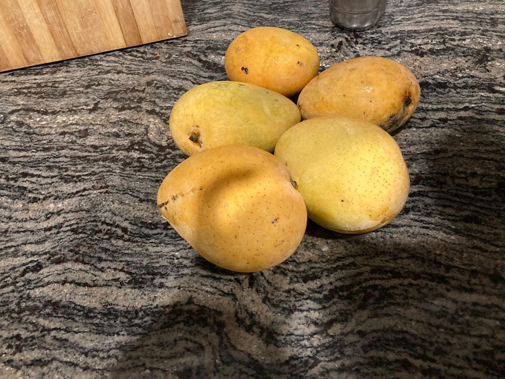
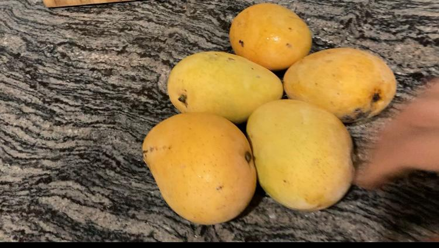
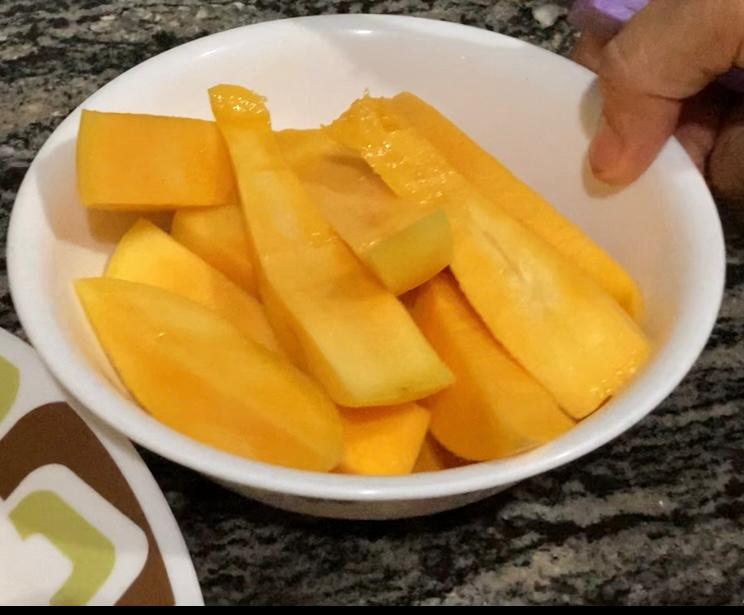
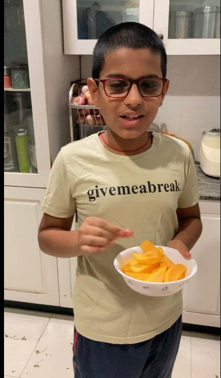
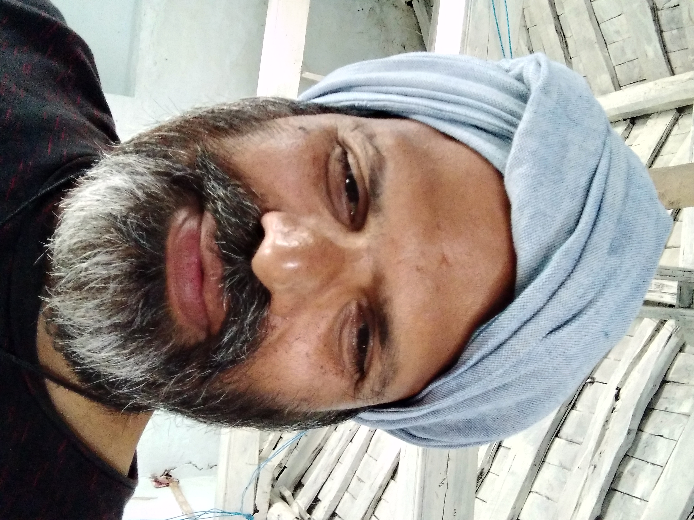

Coopious - Copious Cooperation
Table of Contents

1. Feedback
Please fill the feedback form about your experience having Coopious Mangoes.
2. Motivation
It is a modest effort but a revolutionary one to connect the consumers directly to the farmers and their produce. This model would dissolve permanently some of the inveterate problems facing a consumer: access to quality produce; and facing a farmer: a remunerative price. Also a myriad bunch of benefits would accrue both to the farmer and the consumer.
3. At a Glance
- Variety: Banginapalli (Benishaan)
- Box Weight: 5 kg, (~ 18 to 22 mangoes)
- Price: Rs 500
4. Place your order
5. Plan
I harvested the mangoes, only Banginapalli(Benishan) variety on 2022-05-29 Sun and will ripen them over the weekend. I got them to Hyderabad packed in 5 and 10kg carton boxes with hay inside to allow for further ripening. Each 5kg box costs Rs 500/-, i.e., Rs 100 /kg. The produce is totally organic. The orchard has bore fruit starting this year. This farm never used chemical fertilizers. The land was fallow before we planted mango saplings. Please purchase and encourage. My email is travula@gmail.com and phone number is 9490448747.
6. Benefits of buying from Coopious
- The mangoes are harvested only after they reach the ripening stage on the tree ensuring a sweet taste that eludes many that are procured from retail outlets in the city.
- Organically grown and naturally ripened.
- To be able to connect directly to the farmer and influence the way farming is carried out. However radical the idea is, this could have profound implications in mitigating many of the bad practices in farming leading to healthy soil, nutritious and tasty produce and healthy consumers. On the whole a road towards sustainable farming could be paved.
7. Pictures




8. About Me
I am tied to the idea "Small is Beautiful" and does farming in my native village over the weekends. I attribute most of the problems that afflict us today to bigness. I am also of the firm belief that bigness takes away the connection between man and nature and allows one to sheild from owning responsiblity for the irreparable damage being done to EARTH.

9. Why does this happen?
Agriculture is indeed not much different from child rearing. The responsibility and the associated joy seem to be present in both the activities. But in the prevailing conditions, does the farmer have the luxury to look at that way? The farmer has to wage a battle against high input costs, low prices for his produce, vagaries of the climate, to earn a decent livelihood. Institutional support - banks, market places, co-operative societies, insurance policies - is either non existent or is being dismantled if any by the neoliberal policies being pursued by the government. This leaves the farmer in a desperate situation forbidding any joy in his profession and in the process forcing him to adopt various unsustainable methods in the hope of staying afloat the wrecked ship - the agriculture. The only choice left before the farmer to offset the high input costs and low output prices is to raise the output. The farmer without realizing enters into a vicious cycle: to increase the output, he applies higher doses of fertilizer, pesticides thereby increasing the input costs and in the process agriculture is re-laid on the lines of factory production. The practices would increase production in the short term but have deleterious affects in the long term. Unlike in assembly line production, dependence of harvest on multiple factors - pests, rainfall, climate (modern agricultural practices are inadequate to ensure flowering and the ratio of flowers that would turn into fruit), etc - leaves a farmer moored to a mountain of debt. This situation has forced an exodus from farming leaving only either the brave or for whom agriculture is the only option. Our model here would alleviate the condition of the farmer by raising the output price. This would increase the number of factors to two - size of produce and price of produce - that a farmer can depend on for the viability of his profession and provide breathing space to rethink on the present practices of farming.
10. The FUTURE
A new future hinges on the success of this initial offering of Coopious. Coopious should enable all the entities in a supply chain to be cooperatives operating in a transparent manner. Transparency should be the pre-requisite for any business and a consumers' right. For example, in a agriculture produce supply chain, we would have a farmers, processing, delivery and consumers cooperatives working together. Therefore, it should be possible to:
- ensure the quality of produce as promised by the farmer
- provide mechanism for delivery to the consumer
- provide a barcode to the produce that a consumer buys which can hold
information about:
- quality of the soil,
- nutritional level of the produce,
- the day of harvest,
- number of miles the produce traveled and other relevant information that a consumer deems necessary for him to make a qualified decision.
Such information should enable a consumer to have all the information about each morsel of food that she eats. On the production side cooperatives using Coopious platform can ensure the producer is the sole beneficiary by eliminating all the middlemen. Small scale solar powered processing industries can be set in the villages to process the produce like milling rice or pulses, extracting oil form seeds. These will not only provide employment in the villages but could transform the villages into cash rich self sustaining units that can finance building modern urban facilities like sewerage lines, water lines, proper schools, hospitals etc.